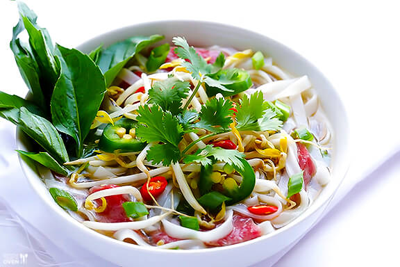
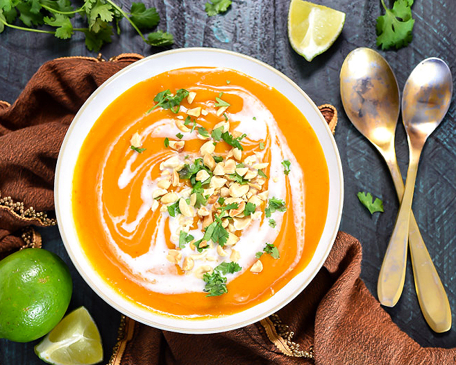

My Favorite Soups
 |
JAPANESE RAMEN NOODLESMy number one, I love it on snowy winter days and in the blazing heat of summer! Ramen is a Japanese dish. It consists of Chinese-style wheat noodles served in a meat or fish-based broth, often flavored with soy sauce or miso, and uses toppings such as sliced pork, dried seaweed, menma, and green onions. |
|  | VIETNAMESE PHO soupA big bowl of comforting, warm, aromatic, fresh, piled-high-with-garnishes, awkward-to-pronounce-but-awesome-to-taste Vietnamese pho. Pho is one of my most comforting of comfort foods. I love it at my favorite Pholien restaurant in Montreal, and I love finding new Vietnamese restaurants when I travel |
|  | COCONUT RED CURRY BUTTERNUT SQUASH soupYummyy!!! Fall soups can be so satisfying for weeknight dinners and so impressive at holiday gatherings. This soup will impress everyone seated around your table.The best part? is the mix of thai red curry and coconut milk. You'll want to select a smaller squash at the market for this recipe, and I highly recommend some toasted baguette or naan bread for dipping. |
About this page
This page has been coded during the FullStack program @LeWagon.